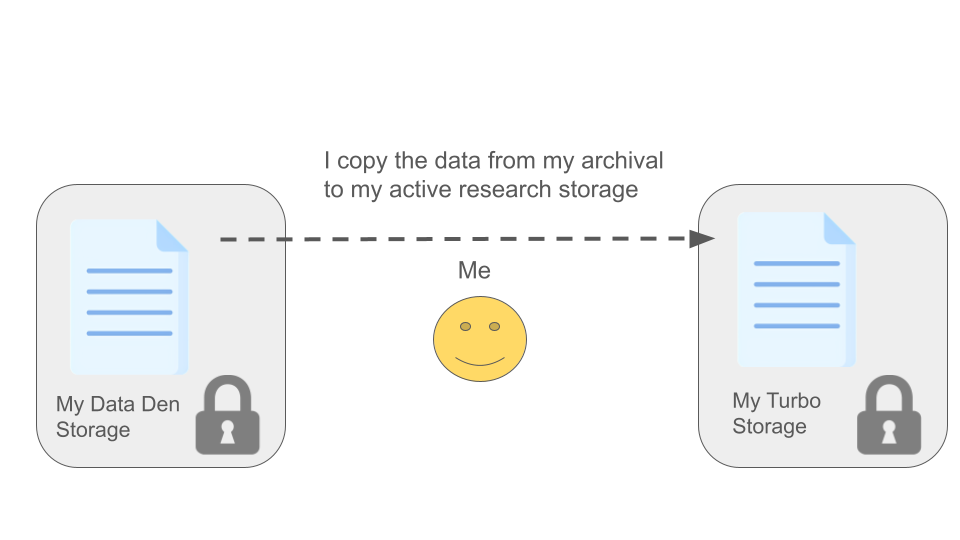

In this module, we will:
- review storage best practices and relate them to real
situations
- learn about the data transfer tool Globus
- gain real experience using Globus in various ways
Relating Data Transfer to Storage Best Practices with Typical
Examples
- I need to retrieve raw data from a data provider, and keep it in a
safe place
- I need to copy my raw data into a new location, to perform an
analysis
- I need to share my raw data and my analysis with a collaborator
Data Transfer
As you can see, data transfer itself is an important consideration
that goes hand in hand with our storage best practices described in the
previous module. Ensuring that data is transmitted and received intact,
and understanding the movement and placement of data during your
research life cycle is a very important aspect of reproducible
computing.
Globus
For the data transfer portion of this workshop, we’ll focus on a
software solution called Globus. Globus allows the transfer of data
between different storage systems, and it’s designed particularly for
transferring research data. Many universities and institutions,
including the University of Michigan, are using Globus in this way.
What is Globus, and What it Isn’t
Globus is a software suite for data transfer operations with the
following characteristics:
- Fast, with parallelized transfer operations
- Resilient to connectivity problems
- If any failures occur during transfer, ability to resume
- Fire and forget*
- Highly configurable with fine-tuned access control
- Geared towards research data, particularly where data volumes are
very high
Globus is not a cloud storage service, in contrast with
something like DropBox

Globus Sneak Preview / Orientation

Globus Single Pane Preview

Globus Dual Pane Preview
Exercise Transferring Data from Data Provider to My Data Den
Exercise Transferring Data from My Data Den to My Turbo
 |
 |
Additional Scenarios
Sharing Data with a Collaborator
Data Provider (AGC) ‘Pushes’ Data to Me
Sometimes, if we expect many data deliveries over a period of time,
and if we’re dealing with an entity that we can trust with write access
to our storage location, it may be advantageous to set up an arrangement
so that they may transfer the data to us without any action on our
part.
As shown in the figure, we can grant read and write
access to them, and this enables them to transfer data to us without our
involvement. In other words, this allows them to ‘push’ data to us,
without the need for interaction from us.
The Advanced Genomics Core at UMich is increasingly recommending this
type of arrangement, especially to researchers who already have Data Den
storage allocations through the UMRCP. This is an excellent way to
ensure that your data are automatically placed in a good place for
long-term archival storage.
Here is a link
for the AGC data retrieval page which includes the push-to-data-den
instructions. If you scroll to the bottom of that page, under the
“Where to keep your data” heading, there is a drop-down section for “U-M
Clients”. The instructions therein are the details of how to set up a
push-to-data-den, where you set up a designated location in
your Data Den space and grant permissions for the AGC to write your
sequencing data directly to that location.
Collaborator Shares Data with Me
Using Globus Connect Personal to Transfer to/from Non-Institutional
Storage
During this workshop, we’ve emphasized usage of institutional storage
allocations like Turbo and Data Den. Our example exercises have also
only utilized institutional storage. As discussed, we recommend keeping
your data within the institutional storage options if possible, for the
redundancy and safety capabilities that they offer. However, there may
be situations where you must transfer data to/from non-institutional
storage. We can also use the Globus software suite to accomplish this,
using a tool called Globus Connect Personal.
It may be easy to forget that Globus is not a Cloud Storage provider
while using it. As mentioned, when we’re using Globus to transfer data
among institutional storage locations, we have always-on,
fire-and-forget capabilities that can feel similar to other tools like
DropBox. However, this is only possible because UMich (and other
research institutions) provide this always-on capability. Essentially,
our academic IT provides the constant connection between the Globus
software and our institutional storage like Data Den, Turbo, etc. If we
want to transfer data to/from non-institutional storage, though, we
don’t have this luxury.
Globus Connect Personal is an application that you download and
install on the computer that holds (or has access to) the data that you
want to transfer. For instance, if you have sequencing data stored on
the hard-drive of an old laptop (not recommended, but it happens), you
would install Globus Connect Personal on that laptop and it could
provide the connection between the laptop’s hard drive and other
Globus-connected storage like the Data Den and Turbo locations we’ve
used above. After installing and configuring this, you could then see
(and share, etc.) data from the laptop using the Globus Web App to
perform transfers just as we have in the exercises above.
You can find documentation about installing and configuring Globus
Connect Personal at this page on
Globus’s documentation website.
Note: The computer that’s running Globus Connect Personal must remain
on and connected to the network for the entire duration of the transfer.
Remember that in this case, the Globus Connect Personal software that’s
running on that computer is what provides the connection to all other
Globus-connected storage.
Review Main Points
When considering any data transfer, you must understand:
- Where the data currently resides
- Where the data will be transferred to
- Who is responsible for performing the transfer
Unless this is arranged previously for an ongoing relationship,
someone will always need to grant permissions to
enable a transfer between two parties.
LS0tCnRpdGxlOiAiVHJhbnNmZXJyaW5nIERhdGEgd2l0aCBHbG9idXMiCmF1dGhvcjogIlVNIEJpb2luZm9ybWF0aWNzIENvcmUiCm91dHB1dDoKICAgICAgICBodG1sX2RvY3VtZW50OgogICAgICAgICAgICBpbmNsdWRlczoKICAgICAgICAgICAgICAgIGluX2hlYWRlcjogaGVhZGVyLmh0bWwKICAgICAgICAgICAgdGhlbWU6IHBhcGVyCiAgICAgICAgICAgIG51bWJlcl9zZWN0aW9uczogZmFsc2UKICAgICAgICAgICAgZmlnX2NhcHRpb246IHRydWUKICAgICAgICAgICAgbWFya2Rvd246IEdGTQogICAgICAgICAgICBjb2RlX2Rvd25sb2FkOiB0cnVlCi0tLQo8c3R5bGUgdHlwZT0idGV4dC9jc3MiPgpib2R5eyAvKiBOb3JtYWwgICovCiAgICAgIGZvbnQtc2l6ZTogMTRwdDsKICB9CnByZSB7CiAgZm9udC1zaXplOiAxMnB0Cn0KPC9zdHlsZT4KCkluIHRoaXMgbW9kdWxlLCB3ZSB3aWxsOgoKKiByZXZpZXcgc3RvcmFnZSBiZXN0IHByYWN0aWNlcyBhbmQgcmVsYXRlIHRoZW0gdG8gcmVhbCBzaXR1YXRpb25zCiogbGVhcm4gYWJvdXQgdGhlIGRhdGEgdHJhbnNmZXIgdG9vbCBHbG9idXMKKiBnYWluIHJlYWwgZXhwZXJpZW5jZSB1c2luZyBHbG9idXMgaW4gdmFyaW91cyB3YXlzCgoKIyMgUmVsYXRpbmcgRGF0YSBUcmFuc2ZlciB0byBTdG9yYWdlIEJlc3QgUHJhY3RpY2VzIHdpdGggVHlwaWNhbCBFeGFtcGxlcwoKIC0gSSBuZWVkIHRvIHJldHJpZXZlIHJhdyBkYXRhIGZyb20gYSBkYXRhIHByb3ZpZGVyLCBhbmQga2VlcCBpdCBpbiBhIHNhZmUgcGxhY2UKIC0gSSBuZWVkIHRvIGNvcHkgbXkgcmF3IGRhdGEgaW50byBhIG5ldyBsb2NhdGlvbiwgdG8gcGVyZm9ybSBhbiBhbmFseXNpcwogLSBJIG5lZWQgdG8gc2hhcmUgbXkgcmF3IGRhdGEgYW5kIG15IGFuYWx5c2lzIHdpdGggYSBjb2xsYWJvcmF0b3IKCiMjIERhdGEgVHJhbnNmZXIKCkFzIHlvdSBjYW4gc2VlLCBkYXRhIHRyYW5zZmVyIGl0c2VsZiBpcyBhbiBpbXBvcnRhbnQgY29uc2lkZXJhdGlvbiB0aGF0IGdvZXMgaGFuZCBpbiBoYW5kIHdpdGggb3VyIHN0b3JhZ2UgYmVzdCBwcmFjdGljZXMgZGVzY3JpYmVkIGluIHRoZSBwcmV2aW91cyBtb2R1bGUuIEVuc3VyaW5nIHRoYXQgZGF0YSBpcyB0cmFuc21pdHRlZCBhbmQgcmVjZWl2ZWQgaW50YWN0LCBhbmQgdW5kZXJzdGFuZGluZyB0aGUgbW92ZW1lbnQgYW5kIHBsYWNlbWVudCBvZiBkYXRhIGR1cmluZyB5b3VyIHJlc2VhcmNoIGxpZmUgY3ljbGUgaXMgYSB2ZXJ5IGltcG9ydGFudCBhc3BlY3Qgb2YgcmVwcm9kdWNpYmxlIGNvbXB1dGluZy4KCgojIyBHbG9idXMKCkZvciB0aGUgZGF0YSB0cmFuc2ZlciBwb3J0aW9uIG9mIHRoaXMgd29ya3Nob3AsIHdlJ2xsIGZvY3VzIG9uIGEgc29mdHdhcmUgc29sdXRpb24gY2FsbGVkIEdsb2J1cy4gR2xvYnVzIGFsbG93cyB0aGUgdHJhbnNmZXIgb2YgZGF0YSBiZXR3ZWVuIGRpZmZlcmVudCBzdG9yYWdlIHN5c3RlbXMsIGFuZCBpdCdzIGRlc2lnbmVkIHBhcnRpY3VsYXJseSBmb3IgdHJhbnNmZXJyaW5nIHJlc2VhcmNoIGRhdGEuIE1hbnkgdW5pdmVyc2l0aWVzIGFuZCBpbnN0aXR1dGlvbnMsIGluY2x1ZGluZyB0aGUgVW5pdmVyc2l0eSBvZiBNaWNoaWdhbiwgYXJlIHVzaW5nIEdsb2J1cyBpbiB0aGlzIHdheS4KCiMjIyBXaGF0IGlzIEdsb2J1cywgYW5kIFdoYXQgaXQgSXNuJ3QKCjxicj4KCkdsb2J1cyBpcyBhIHNvZnR3YXJlIHN1aXRlIGZvciBkYXRhIHRyYW5zZmVyIG9wZXJhdGlvbnMgd2l0aCB0aGUgZm9sbG93aW5nIGNoYXJhY3RlcmlzdGljczoKCi0gRmFzdCwgd2l0aCBwYXJhbGxlbGl6ZWQgdHJhbnNmZXIgb3BlcmF0aW9ucwotIFJlc2lsaWVudCB0byBjb25uZWN0aXZpdHkgcHJvYmxlbXMKICAtIElmIGFueSBmYWlsdXJlcyBvY2N1ciBkdXJpbmcgdHJhbnNmZXIsIGFiaWxpdHkgdG8gcmVzdW1lCi0gRmlyZSBhbmQgZm9yZ2V0KgotIEhpZ2hseSBjb25maWd1cmFibGUgd2l0aCBmaW5lLXR1bmVkIGFjY2VzcyBjb250cm9sCi0gR2VhcmVkIHRvd2FyZHMgcmVzZWFyY2ggZGF0YSwgcGFydGljdWxhcmx5IHdoZXJlIGRhdGEgdm9sdW1lcyBhcmUgdmVyeSBoaWdoCgpHbG9idXMgaXMgKm5vdCogYSBjbG91ZCBzdG9yYWdlIHNlcnZpY2UsIGluIGNvbnRyYXN0IHdpdGggc29tZXRoaW5nIGxpa2UgRHJvcEJveAoKIVtdKGltYWdlcy9Nb2R1bGUwMl9nbG9idXNfdnNfZHJvcGJveC5wbmcpCgoKPGJyPgoKIyMgR2xvYnVzIFNuZWFrIFByZXZpZXcgLyBPcmllbnRhdGlvbgoKPGJyPgoKIVtHbG9idXMgU2luZ2xlIFBhbmUgUHJldmlld10oaW1hZ2VzL01vZHVsZTAyX2dsb2J1c19wcmV2aWV3X3NpbmdsZV9wYW5lX2hpZ2hsaWdodHMucG5nKQoKPGJyPgoKIVtHbG9idXMgRHVhbCBQYW5lIFByZXZpZXddKGltYWdlcy9Nb2R1bGUwMl9nbG9idXNfcHJldmlld19kdWFsX3BhbmVfaGlnaGxpZ2h0cy5wbmcpCgo8YnI+CgojIyBFeGVyY2lzZSBUcmFuc2ZlcnJpbmcgRGF0YSBmcm9tIERhdGEgUHJvdmlkZXIgdG8gTXkgRGF0YSBEZW4KCjEgfCAyCjotLS0tLS0tLS0tLS0tLS0tLS0tLS0tLS0tLS0tLS0tLS0tLS0tLS0tLS0tLS0tLS0tLS0tLS0tLS0tLS0tOnw6LS0tLS0tLS0tLS0tLS0tLS0tLS0tLS0tLS0tLS0tLS0tLS0tLS0tLS0tLS0tLS0tLS0tLS0tLS0tLS0tLToKIVtdKGltYWdlcy9Nb2R1bGUwMl9kYXRhX3NoYXJlZF93aXRoX21lX0lfdHJhbnNmZXJfMS5wbmcpIHwgIVtdKGltYWdlcy9Nb2R1bGUwMl9kYXRhX3NoYXJlZF93aXRoX21lX0lfdHJhbnNmZXJfMi5wbmcpCgojIyBFeGVyY2lzZSBUcmFuc2ZlcnJpbmcgRGF0YSBmcm9tIE15IERhdGEgRGVuIHRvIE15IFR1cmJvCgoxIHwgMgo6LS0tLS0tLS0tLS0tLS0tLS0tLS0tLS0tLS0tLS0tLS0tLS0tLS0tLS0tLS0tLS0tLS0tLS0tLS0tLS0tLTp8Oi0tLS0tLS0tLS0tLS0tLS0tLS0tLS0tLS0tLS0tLS0tLS0tLS0tLS0tLS0tLS0tLS0tLS0tLS0tLS0tLS06CiFbXShpbWFnZXMvTW9kdWxlMDJfZGF0YV9JX3RyYW5zZmVyX2JldHdlZW5fb3duX3N0b3JhZ2VfMS5wbmcpIHwgIVtdKGltYWdlcy9Nb2R1bGUwMl9kYXRhX0lfdHJhbnNmZXJfYmV0d2Vlbl9vd25fc3RvcmFnZV8yLnBuZykKCgo8YnI+Cjxicj4KCiMjIyBBZGRpdGlvbmFsIFNjZW5hcmlvcwoKPGJyPgoKPGRldGFpbHM+CjxzdW1tYXJ5PlNoYXJpbmcgRGF0YSB3aXRoIGEgQ29sbGFib3JhdG9yPC9zdW1tYXJ5PgoKMSB8IDIKOi0tLS0tLS0tLS0tLS0tLS0tLS0tLS0tLS0tLS0tLS0tLS0tLS0tLS0tLS0tLS0tLS0tLS0tLS0tLS0tLS06fDotLS0tLS0tLS0tLS0tLS0tLS0tLS0tLS0tLS0tLS0tLS0tLS0tLS0tLS0tLS0tLS0tLS0tLS0tLS0tLS0tOgohW10oaW1hZ2VzL01vZHVsZTAyX2RhdGFfSV9zaGFyZV9jb2xsYWJvcmF0b3JfdHJhbnNmZXJzXzEucG5nKSB8ICFbXShpbWFnZXMvTW9kdWxlMDJfZGF0YV9JX3NoYXJlX2NvbGxhYm9yYXRvcl90cmFuc2ZlcnNfMi5wbmcpCgo8L2RldGFpbHM+Cgo8YnI+Cgo8ZGV0YWlscz4KCjxicj4KCjxzdW1tYXJ5PkRhdGEgUHJvdmlkZXIgKEFHQykgJ1B1c2hlcycgRGF0YSB0byBNZTwvc3VtbWFyeT4KCjEgfCAyCjotLS0tLS0tLS0tLS0tLS0tLS0tLS0tLS0tLS0tLS0tLS0tLS0tLS0tLS0tLS0tLS0tLS0tLS0tLS0tLS0tOnw6LS0tLS0tLS0tLS0tLS0tLS0tLS0tLS0tLS0tLS0tLS0tLS0tLS0tLS0tLS0tLS0tLS0tLS0tLS0tLS0tLToKIVtdKGltYWdlcy9Nb2R1bGUwMl9kYXRhX0lfZ3JhbnRfQUdDX1JXX0FHQ190cmFuc2ZlcnNfMS5wbmcpIHwgIVtdKGltYWdlcy9Nb2R1bGUwMl9kYXRhX0lfZ3JhbnRfQUdDX1JXX0FHQ190cmFuc2ZlcnNfMi5wbmcpCgpTb21ldGltZXMsIGlmIHdlIGV4cGVjdCBtYW55IGRhdGEgZGVsaXZlcmllcyBvdmVyIGEgcGVyaW9kIG9mIHRpbWUsIGFuZCBpZiB3ZSdyZSBkZWFsaW5nIHdpdGggYW4gZW50aXR5IHRoYXQgd2UgY2FuIHRydXN0IHdpdGggd3JpdGUgYWNjZXNzIHRvIG91ciBzdG9yYWdlIGxvY2F0aW9uLCBpdCBtYXkgYmUgYWR2YW50YWdlb3VzIHRvIHNldCB1cCBhbiBhcnJhbmdlbWVudCBzbyB0aGF0IHRoZXkgbWF5IHRyYW5zZmVyIHRoZSBkYXRhIHRvIHVzIHdpdGhvdXQgYW55IGFjdGlvbiBvbiBvdXIgcGFydC4gCgpBcyBzaG93biBpbiB0aGUgZmlndXJlLCB3ZSBjYW4gZ3JhbnQgcmVhZCAqKmFuZCoqIHdyaXRlIGFjY2VzcyB0byB0aGVtLCBhbmQgdGhpcyBlbmFibGVzIHRoZW0gdG8gdHJhbnNmZXIgZGF0YSB0byB1cyB3aXRob3V0IG91ciBpbnZvbHZlbWVudC4gSW4gb3RoZXIgd29yZHMsIHRoaXMgYWxsb3dzIHRoZW0gdG8gJ3B1c2gnIGRhdGEgdG8gdXMsIHdpdGhvdXQgdGhlIG5lZWQgZm9yIGludGVyYWN0aW9uIGZyb20gdXMuCgpUaGUgQWR2YW5jZWQgR2Vub21pY3MgQ29yZSBhdCBVTWljaCBpcyBpbmNyZWFzaW5nbHkgcmVjb21tZW5kaW5nIHRoaXMgdHlwZSBvZiBhcnJhbmdlbWVudCwgZXNwZWNpYWxseSB0byByZXNlYXJjaGVycyB3aG8gYWxyZWFkeSBoYXZlIERhdGEgRGVuIHN0b3JhZ2UgYWxsb2NhdGlvbnMgdGhyb3VnaCB0aGUgVU1SQ1AuIFRoaXMgaXMgYW4gZXhjZWxsZW50IHdheSB0byBlbnN1cmUgdGhhdCB5b3VyIGRhdGEgYXJlIGF1dG9tYXRpY2FsbHkgcGxhY2VkIGluIGEgZ29vZCBwbGFjZSBmb3IgbG9uZy10ZXJtIGFyY2hpdmFsIHN0b3JhZ2UuICAKCkhlcmUgaXMgYSBbbGluayBmb3IgdGhlIEFHQyBkYXRhIHJldHJpZXZhbCBwYWdlIHdoaWNoIGluY2x1ZGVzIHRoZSBwdXNoLXRvLWRhdGEtZGVuIGluc3RydWN0aW9uc10oaHR0cHM6Ly9tZWRyZXNlYXJjaC51bWljaC5lZHUvb2ZmaWNlLXJlc2VhcmNoL2Fib3V0LW9mZmljZS1yZXNlYXJjaC9iaW9tZWRpY2FsLXJlc2VhcmNoLWNvcmUtZmFjaWxpdGllcy9hZHZhbmNlZC1nZW5vbWljcy1jb3JlL2RhdGEtcmV0cmlldmFsKS4gSWYgeW91IHNjcm9sbCB0byB0aGUgYm90dG9tIG9mIHRoYXQgcGFnZSwgdW5kZXIgdGhlICJXaGVyZSB0byBrZWVwIHlvdXIgZGF0YSIgaGVhZGluZywgdGhlcmUgaXMgYSBkcm9wLWRvd24gc2VjdGlvbiBmb3IgIlUtTSBDbGllbnRzIi4gVGhlIGluc3RydWN0aW9ucyB0aGVyZWluIGFyZSB0aGUgZGV0YWlscyBvZiBob3cgdG8gc2V0IHVwIGEgYHB1c2gtdG8tZGF0YS1kZW5gLCB3aGVyZSB5b3Ugc2V0IHVwIGEgZGVzaWduYXRlZCBsb2NhdGlvbiBpbiB5b3VyIERhdGEgRGVuIHNwYWNlIGFuZCBncmFudCBwZXJtaXNzaW9ucyBmb3IgdGhlIEFHQyB0byB3cml0ZSB5b3VyIHNlcXVlbmNpbmcgZGF0YSBkaXJlY3RseSB0byB0aGF0IGxvY2F0aW9uLgoKCjwvZGV0YWlscz4KCjxicj4KCjxkZXRhaWxzPgo8c3VtbWFyeT5Db2xsYWJvcmF0b3IgU2hhcmVzIERhdGEgd2l0aCBNZTwvc3VtbWFyeT4KCjEgfCAyCjotLS0tLS0tLS0tLS0tLS0tLS0tLS0tLS0tLS0tLS0tLS0tLS0tLS0tLS0tLS0tLS0tLS0tLS0tLS0tLS0tOnw6LS0tLS0tLS0tLS0tLS0tLS0tLS0tLS0tLS0tLS0tLS0tLS0tLS0tLS0tLS0tLS0tLS0tLS0tLS0tLS0tLToKIVtdKGltYWdlcy9Nb2R1bGUwMl9kYXRhX2NvbGxhYl9zaGFyZWRfd2l0aF9tZV9JX3RyYW5zZmVyXzEucG5nKSB8ICFbXShpbWFnZXMvTW9kdWxlMDJfZGF0YV9jb2xsYWJfc2hhcmVkX3dpdGhfbWVfSV90cmFuc2Zlcl8yLnBuZykKCgo8L2RldGFpbHM+Cgo8YnI+Cgo8ZGV0YWlscz4KPHN1bW1hcnk+VXNpbmcgR2xvYnVzIENvbm5lY3QgUGVyc29uYWwgdG8gVHJhbnNmZXIgdG8vZnJvbSBOb24tSW5zdGl0dXRpb25hbCBTdG9yYWdlPC9zdW1tYXJ5PgoKRHVyaW5nIHRoaXMgd29ya3Nob3AsIHdlJ3ZlIGVtcGhhc2l6ZWQgdXNhZ2Ugb2YgaW5zdGl0dXRpb25hbCBzdG9yYWdlIGFsbG9jYXRpb25zIGxpa2UgVHVyYm8gYW5kIERhdGEgRGVuLiBPdXIgZXhhbXBsZSBleGVyY2lzZXMgaGF2ZSBhbHNvIG9ubHkgdXRpbGl6ZWQgaW5zdGl0dXRpb25hbCBzdG9yYWdlLiBBcyBkaXNjdXNzZWQsIHdlIHJlY29tbWVuZCBrZWVwaW5nIHlvdXIgZGF0YSB3aXRoaW4gdGhlIGluc3RpdHV0aW9uYWwgc3RvcmFnZSBvcHRpb25zIGlmIHBvc3NpYmxlLCBmb3IgdGhlIHJlZHVuZGFuY3kgYW5kIHNhZmV0eSBjYXBhYmlsaXRpZXMgdGhhdCB0aGV5IG9mZmVyLiBIb3dldmVyLCB0aGVyZSBtYXkgYmUgc2l0dWF0aW9ucyB3aGVyZSB5b3UgbXVzdCB0cmFuc2ZlciBkYXRhIHRvL2Zyb20gbm9uLWluc3RpdHV0aW9uYWwgc3RvcmFnZS4gV2UgY2FuIGFsc28gdXNlIHRoZSBHbG9idXMgc29mdHdhcmUgc3VpdGUgdG8gYWNjb21wbGlzaCB0aGlzLCB1c2luZyBhIHRvb2wgY2FsbGVkIEdsb2J1cyBDb25uZWN0IFBlcnNvbmFsLgoKSXQgbWF5IGJlIGVhc3kgdG8gZm9yZ2V0IHRoYXQgR2xvYnVzIGlzIG5vdCBhIENsb3VkIFN0b3JhZ2UgcHJvdmlkZXIgd2hpbGUgdXNpbmcgaXQuIEFzIG1lbnRpb25lZCwgd2hlbiB3ZSdyZSB1c2luZyBHbG9idXMgdG8gdHJhbnNmZXIgZGF0YSBhbW9uZyBpbnN0aXR1dGlvbmFsIHN0b3JhZ2UgbG9jYXRpb25zLCB3ZSBoYXZlIGFsd2F5cy1vbiwgZmlyZS1hbmQtZm9yZ2V0IGNhcGFiaWxpdGllcyB0aGF0IGNhbiBmZWVsIHNpbWlsYXIgdG8gb3RoZXIgdG9vbHMgbGlrZSBEcm9wQm94LiBIb3dldmVyLCB0aGlzIGlzIG9ubHkgcG9zc2libGUgYmVjYXVzZSBVTWljaCAoYW5kIG90aGVyIHJlc2VhcmNoIGluc3RpdHV0aW9ucykgcHJvdmlkZSB0aGlzIGFsd2F5cy1vbiBjYXBhYmlsaXR5LiBFc3NlbnRpYWxseSwgb3VyIGFjYWRlbWljIElUIHByb3ZpZGVzIHRoZSBjb25zdGFudCBjb25uZWN0aW9uIGJldHdlZW4gdGhlIEdsb2J1cyBzb2Z0d2FyZSBhbmQgb3VyIGluc3RpdHV0aW9uYWwgc3RvcmFnZSBsaWtlIERhdGEgRGVuLCBUdXJibywgZXRjLiBJZiB3ZSB3YW50IHRvIHRyYW5zZmVyIGRhdGEgdG8vZnJvbSBub24taW5zdGl0dXRpb25hbCBzdG9yYWdlLCB0aG91Z2gsIHdlIGRvbid0IGhhdmUgdGhpcyBsdXh1cnkuCgpHbG9idXMgQ29ubmVjdCBQZXJzb25hbCBpcyBhbiBhcHBsaWNhdGlvbiB0aGF0IHlvdSBkb3dubG9hZCBhbmQgaW5zdGFsbCBvbiB0aGUgY29tcHV0ZXIgdGhhdCBob2xkcyAob3IgaGFzIGFjY2VzcyB0bykgdGhlIGRhdGEgdGhhdCB5b3Ugd2FudCB0byB0cmFuc2Zlci4gRm9yIGluc3RhbmNlLCBpZiB5b3UgaGF2ZSBzZXF1ZW5jaW5nIGRhdGEgc3RvcmVkIG9uIHRoZSBoYXJkLWRyaXZlIG9mIGFuIG9sZCBsYXB0b3AgKG5vdCByZWNvbW1lbmRlZCwgYnV0IGl0IGhhcHBlbnMpLCB5b3Ugd291bGQgaW5zdGFsbCBHbG9idXMgQ29ubmVjdCBQZXJzb25hbCBvbiB0aGF0IGxhcHRvcCBhbmQgaXQgY291bGQgcHJvdmlkZSB0aGUgY29ubmVjdGlvbiBiZXR3ZWVuIHRoZSBsYXB0b3AncyBoYXJkIGRyaXZlIGFuZCBvdGhlciBHbG9idXMtY29ubmVjdGVkIHN0b3JhZ2UgbGlrZSB0aGUgRGF0YSBEZW4gYW5kIFR1cmJvIGxvY2F0aW9ucyB3ZSd2ZSB1c2VkIGFib3ZlLiBBZnRlciBpbnN0YWxsaW5nIGFuZCBjb25maWd1cmluZyB0aGlzLCB5b3UgY291bGQgdGhlbiBzZWUgKGFuZCBzaGFyZSwgZXRjLikgZGF0YSBmcm9tIHRoZSBsYXB0b3AgdXNpbmcgdGhlIEdsb2J1cyBXZWIgQXBwIHRvIHBlcmZvcm0gdHJhbnNmZXJzIGp1c3QgYXMgd2UgaGF2ZSBpbiB0aGUgZXhlcmNpc2VzIGFib3ZlLgoKWW91IGNhbiBmaW5kIGRvY3VtZW50YXRpb24gYWJvdXQgaW5zdGFsbGluZyBhbmQgY29uZmlndXJpbmcgR2xvYnVzIENvbm5lY3QgUGVyc29uYWwgYXQgW3RoaXMgcGFnZSBvbiBHbG9idXMncyBkb2N1bWVudGF0aW9uIHdlYnNpdGVdKGh0dHBzOi8vZG9jcy5nbG9idXMub3JnL2dsb2J1cy1jb25uZWN0LXBlcnNvbmFsLykuCgo+Tm90ZTogVGhlIGNvbXB1dGVyIHRoYXQncyBydW5uaW5nIEdsb2J1cyBDb25uZWN0IFBlcnNvbmFsIG11c3QgcmVtYWluIG9uIGFuZCBjb25uZWN0ZWQgdG8gdGhlIG5ldHdvcmsgZm9yIHRoZSBlbnRpcmUgZHVyYXRpb24gb2YgdGhlIHRyYW5zZmVyLiBSZW1lbWJlciB0aGF0IGluIHRoaXMgY2FzZSwgdGhlIEdsb2J1cyBDb25uZWN0IFBlcnNvbmFsIHNvZnR3YXJlIHRoYXQncyBydW5uaW5nIG9uIHRoYXQgY29tcHV0ZXIgaXMgd2hhdCBwcm92aWRlcyB0aGUgY29ubmVjdGlvbiB0byBhbGwgb3RoZXIgR2xvYnVzLWNvbm5lY3RlZCBzdG9yYWdlLgoKPC9kZXRhaWxzPgoKPGJyPgo8YnI+CgojIyBSZXZpZXcgTWFpbiBQb2ludHMKCldoZW4gY29uc2lkZXJpbmcgYW55IGRhdGEgdHJhbnNmZXIsIHlvdSBtdXN0IHVuZGVyc3RhbmQ6CgotIFdoZXJlIHRoZSBkYXRhIGN1cnJlbnRseSByZXNpZGVzCi0gV2hlcmUgdGhlIGRhdGEgd2lsbCBiZSB0cmFuc2ZlcnJlZCB0bwotIFdobyBpcyByZXNwb25zaWJsZSBmb3IgcGVyZm9ybWluZyB0aGUgdHJhbnNmZXIKClVubGVzcyB0aGlzIGlzIGFycmFuZ2VkIHByZXZpb3VzbHkgZm9yIGFuIG9uZ29pbmcgcmVsYXRpb25zaGlwLCAqc29tZW9uZSogd2lsbCAqYWx3YXlzKiBuZWVkIHRvIGdyYW50IHBlcm1pc3Npb25zIHRvIGVuYWJsZSBhIHRyYW5zZmVyIGJldHdlZW4gdHdvIHBhcnRpZXMuCgoKfCBbUHJldmlvdXMgbGVzc29uXShNb2R1bGVfcmF3X2RhdGFfbWFuYWdlbWVudC5odG1sKSB8IFtUb3Agb2YgdGhpcyBsZXNzb25dKCN0b3ApIHwgW05leHQgbGVzc29uXSh3cmFwX3VwLmh0bWwpIHwKfCA6LS0tIHwgOi0tLS06IHwgLS0tOiB8Cg==